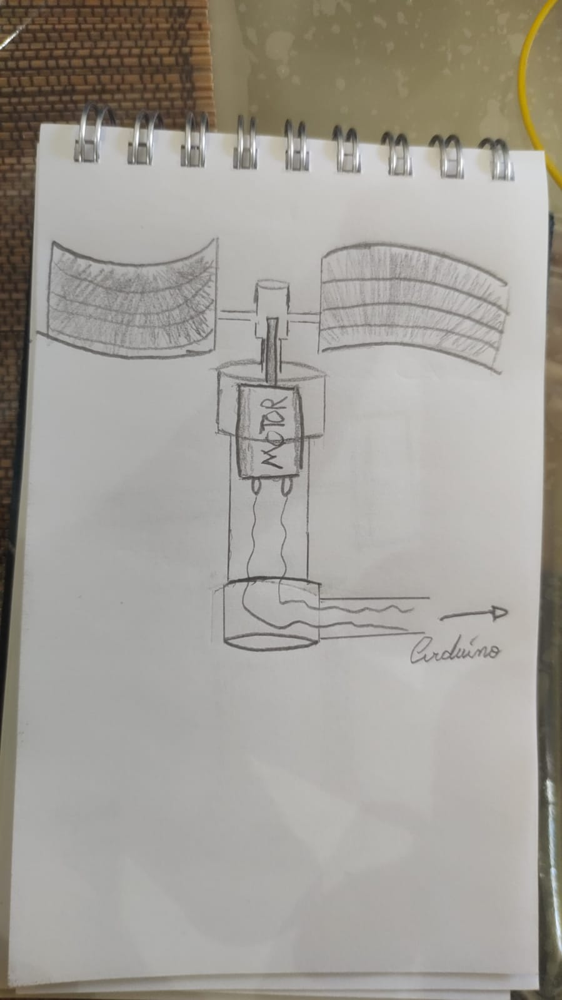
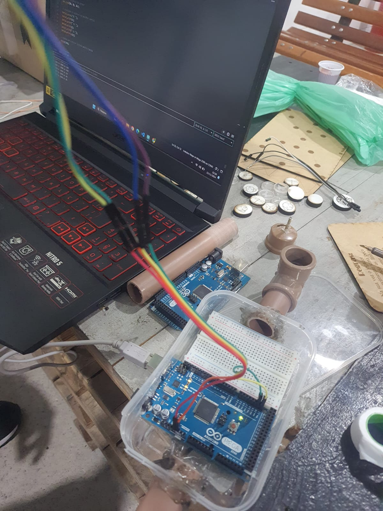
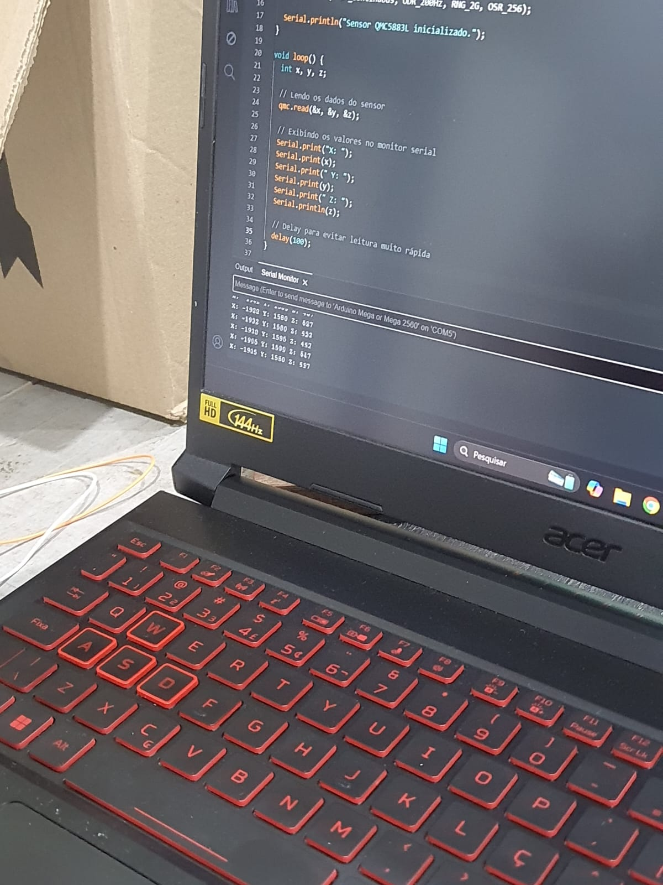
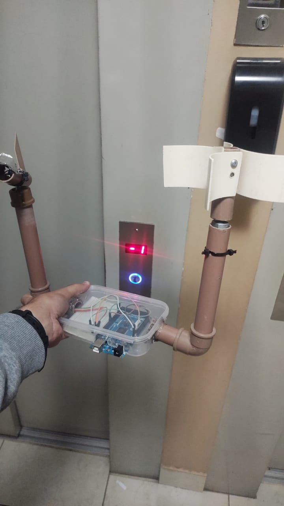
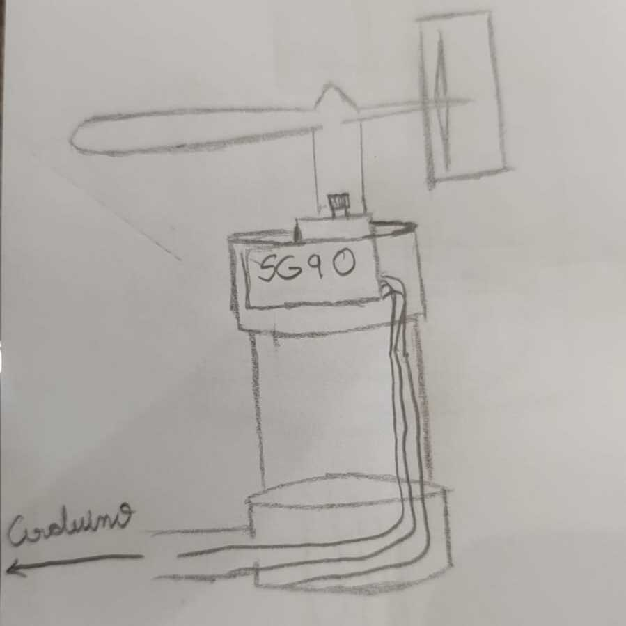

Este projeto desenvolve um anemômetro simples e acessível para medir a velocidade e direção do vento,
utilizando um Arduino Mega 2560 e componentes acessíveis. A estrutura inclui um motor DC, que mede a
velocidade do vento por meio da rotação de suas pás, e um sensor Hall, que captura mudanças magnéticas
para identificar a direção do vento. Os dados são processados pelo Arduino e exibidos no monitor serial,
formando um sistema eficiente de monitoramento da velocidade e direção do vento.
Turma de Engenharia da Computação (ECO/IFSP - GRU) - 2024



Alunos participantes do projeto
Guilherme Barroso
GU3054101
Luan Patrique
GU3055256
Kauã Gabriel
GU305506X
Antonio Henrique
GU3053946
Yuri Forkel
GU3053831
Guilherme Matos
GU3054179
Anderson Carvalho
GU3055078

Desenvolvimento do projeto
Etapas da criação do anemômetro e da biruta:
Nas primeiras idéias do projeto, o motor iria funcionar como um gerador. A partir disso, quanto mais
vento, mais corrente iria ultrapassar os resistores, acendendo o painel de led específico. Essa
idéia foi descartada pelo número de led que queria utilizados e a imprecisão das medidas.
Em um anemômetro que utiliza ambos os dispositivos, a hélice mede a velocidade do vento enquanto a
biruta indica sua direção. Juntas, essas duas partes fornecem uma leitura completa das condições do
vento em um dado momento, sendo muito utilizadas em meteorologia, engenharia e em diversas outras
áreas que necessitam de dados sobre o clima e o comportamento do vento.
O Arduino é essencial no projeto de medição de direção e velocidade dos ventos, integrando sensores
e processando os dados. Ele utiliza um motor DC com sensor Hall para detectar a direção do vento e
mede a velocidade com base na rotação do motor. O Arduino Mega 2560 realiza os cálculos e transmite
os dados para análise em tempo real, destacando-se pela flexibilidade e eficiência em projetos
educacionais e de engenharia.
O sensor Hall detecta o campo magnético gerado por um ímã em movimento, gerando pulsos que são lidos
pelo Arduino. Cada pulso representa uma rotação do motor, o que está diretamente relacionado à
velocidade do vento. Para garantir precisão, o código filtra pulsos indesejados, ignorando aqueles
gerados por flutuações ou ruído, utilizando técnicas de debouncing e filtragem de pulsos.
Com os pulsos filtrados, o Arduino calcula a frequência dos pulsos, convertendo-a em uma medida de
velocidade. Cada rotação do motor corresponde a uma mudança na intensidade do vento, e a frequência
dos pulsos pode ser convertida para uma unidade de medida como metros por segundo ou quilômetros por
hora. A fórmula para o cálculo da velocidade do vento (v) é dada por:
v = d / t Onde:
d é o deslocamento (em metros),
t é o tempo (em segundos).
Referência: "Introduction to Meteorology" (Autor: Stephen J. Bigg, Editora:
Routledge, 2014).
O sensor QMC5883L, um magnetômetro de três eixos, é responsável por detectar a direção do vento. Ele
mede a intensidade do campo magnético nos eixos X, Y e Z. Com esses valores, o Arduino calcula o
ângulo da direção do vento em relação ao norte magnético da Terra, utilizando a fórmula de arco
tangente:
θ = atan2(Y, X) Onde:
Y e X são os valores de campo magnético nos eixos Y e X,
respectivamente.
Esse ângulo é então mapeado para uma direção cardinal, como Norte, Sul, Leste e Oeste.
Referência: "Meteorological Instrumentation" (Autor: Edward R. Sproles, Editora:
Academic Press, 2018).
A fórmula para calcular a força do vento, que pode ser usada para determinar a intensidade do vento
com base na área exposta e na velocidade, é dada por:
F = 1/2 ρ A v² Onde:
ρ é a densidade do ar (aproximadamente 1,225 kg/m³ ao nível do mar),
A é a área da superfície exposta (em m²),
v é a velocidade do vento (em m/s).
Referência: "Introduction to Meteorology" (Autor: Stephen J. Bigg, Editora:
Routledge, 2014).
A fórmula para a frequência de rotação do anemômetro, que determina quantas rotações o anemômetro
faz por segundo, é dada por:
f = N / t Onde:
N é o número de rotações do anemômetro,
t é o tempo (em segundos).
Referência: "Meteorological Instrumentation" (Autor: Edward R. Sproles, Editora:
Academic Press, 2018).
Com a combinação de sensores de velocidade e direção, o sistema fornece uma visão completa das
condições do vento. O Arduino processa os dados em tempo real, transmitindo a velocidade do vento
baseada na rotação do motor DC e a direção do vento através do magnetômetro QMC5883L. Isso resulta
em um dispositivo preciso e eficiente para medir e monitorar o vento, amplamente útil em áreas como
meteorologia e engenharia.
Nossa Timeline de Desenvolvimento
Conceito Inicial
Ideia inicial do projeto de medir velocidade e direção dos ventos, incluindo o desenvolvimento do site e
definição dos componentes necessários.
12 de Novembro de 2024
15 de Novembro de 2024
Desenvolvimento do Sensor
Implementação do sensor de direção do vento utilizando motor DC e sensor Hall, iniciando a integração com
o Arduino Mega 2560.
Testes de Velocidade
Primeiros testes de medição de velocidade do vento utilizando motor DC e validação dos resultados no
monitor serial do Arduino.
17 de Novembro de 2024
22 de Novembro de 2024
Direção dos Ventos
Implementação do sensor de direção do vento utilizando o QMC5883L, iniciando a integração com o Arduino
Mega 2560.
Conclusão do Projeto
Finalização do site para apresentação do projeto, destacando a funcionalidade do sistema e os aprendizados
durante o desenvolvimento.
A biruta é projetada para se mover com a direção do vento, fornecendo uma indicação visual de sua
intensidade e direção. Essa dinâmica de movimento pode ter sido uma inspiração para a construção de
sensores em anemômetros modernos, como os de copo ou de hélice, que também respondem à força do
vento e podem gerar um sinal proporcional à sua velocidade.
O Arduino conta o número de pulsos gerados pelo movimento da hélice ao longo do tempo e, com base
nessa frequência, calcula a velocidade do vento. A leitura é então enviada para um computador, assim
código no Arduino converte os pulsos em uma medida de velocidade, normalmente em metros por segundo
(m/s) ou quilômetros por hora (km/h).
A Bússola Magnética foi usada para determinar a direção do campo magnético terrestre. Em um
anemômetro digital, ela pode ser usada para identificar a orientação do vento, determinando de onde
ele está vindo. Sensores de magnetômetro podem ser usados para medir o ângulo do vento em relação ao
norte magnético.
Dias recentesEscolha o dia que deseja ver a velocidade e direção do vento
Velocidade Média dos Ventos:11km/h
Direção Predominante dos Ventos:Norte
Velocidade Média dos Ventos:11km/h
Direção Predominante dos Ventos:Sudoeste
Velocidade Média dos Ventos:11km/h
Direção Predominante dos Ventos:Sul
Velocidade Média dos Ventos:11km/h
Direção Predominante dos Ventos:Leste
Velocidade Média dos Ventos:11km/h
Direção Predominante dos Ventos:Oeste
Velocidade Média dos Ventos:11km/h
Direção Predominante dos Ventos:Nordeste

Conclusão
Este anemômetro desenvolvido com Arduino Mega 2560 oferece uma solução acessível e eficiente para medir a
velocidade e direção do vento. A escolha de componentes simples, como o motor DC e o sensor Hall, garante
a facilidade de construção e implementação, além de proporcionar resultados precisos no monitoramento do
vento. O projeto demonstra como tecnologias básicas podem ser combinadas para criar sistemas úteis e
funcionais, servindo como uma excelente base para futuras melhorias e aplicações em diferentes áreas, como
climatologia, agricultura e automação.
Desenvolveu-se um anemômetro funcional com Arduino para medir a velocidade do vento.
A hélice foi integrada para capturar as rotações e calcular a velocidade do vento.
O sensor hall foi usado para contar as rotações da hélice.
A direção do vento foi monitorada por um magnetômetro.